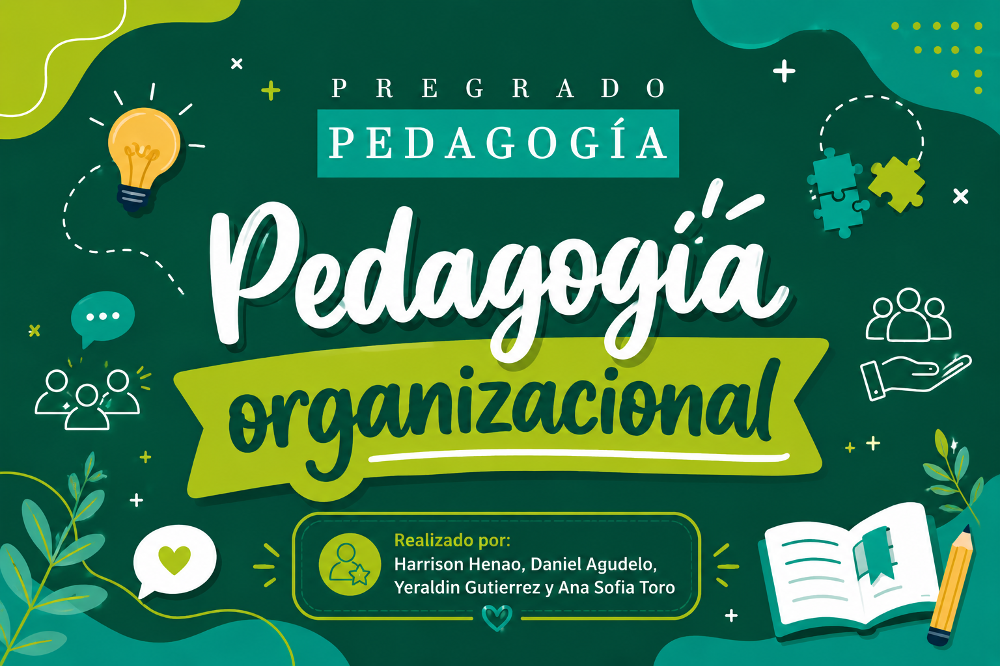

Pedagogía Organizacional · Pregrado en Pedagogía
Universidad de Antioquia · Facultad de Educación · Pregrado en Pedagogía
Explora el concepto, sus enfoques, experiencias estudiantiles, recursos para entender mejor la pedagogía organizacional.
Una explicación básica de la pedagogía organizacional, con su sentido dentro de la formación pedagógica y el trabajo en organizaciones.
Conoce qué hace el pedagogo organizacional, sus modelos de formación y por qué es importante en las organizaciones.
Testimonios y voces estudiantiles que muestran cómo se vive esta área en práctica y en contextos reales.
Un cierre con las ideas centrales del proyecto y la importancia de la pedagogía organizacional en la formación y el trabajo.
Conoce el concepto, el objeto de estudio y el marco general del programa.
Conoce qué hace el pedagogo organizacional, sus modelos de formación y por qué es importante en las organizaciones.
Testimonios de compañeros sobre su experiencia en el área organizacional.
Relatos visuales que muestran cómo la pedagogía transforma el aprendizaje.
Materiales listos para usar en tu práctica y exposiciones.
Conoce al equipo que desarrolló esta propuesta académica.
Un cierre con las ideas centrales del proyecto y su aporte a la pedagogía organizacional.